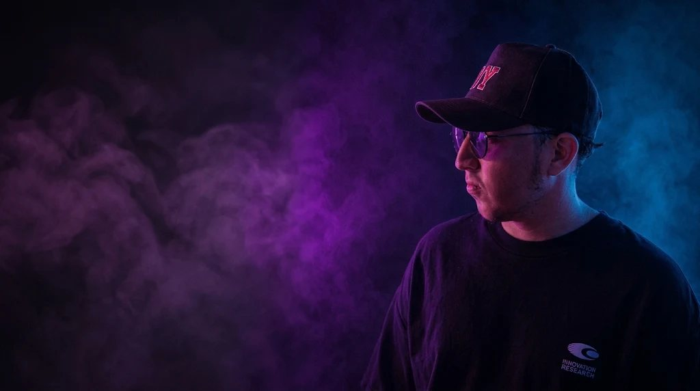
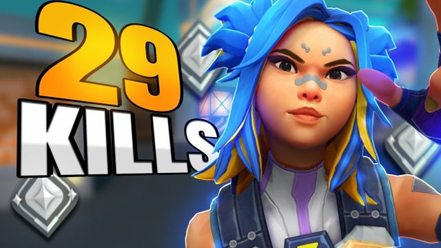
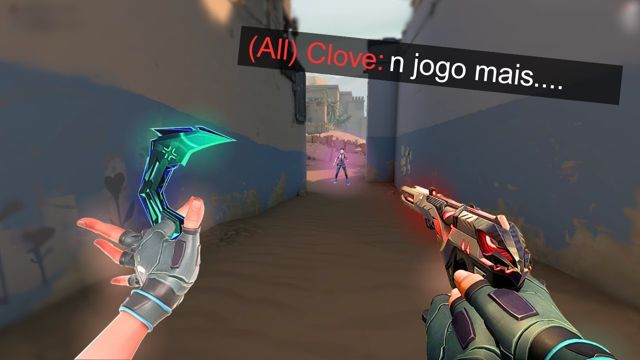
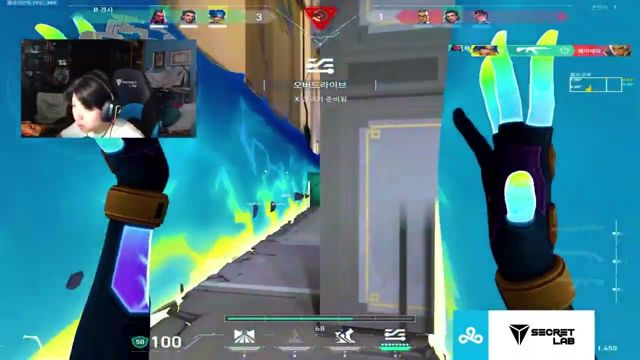
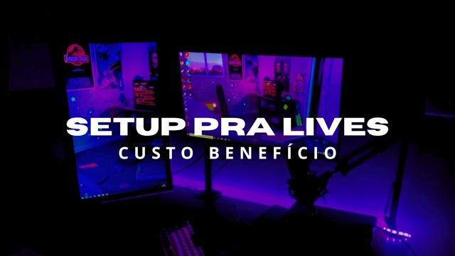
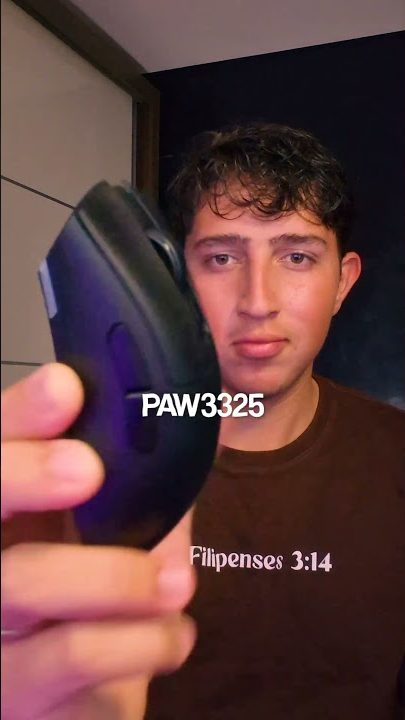
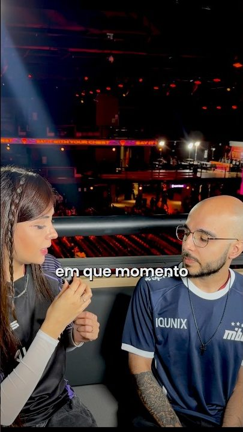
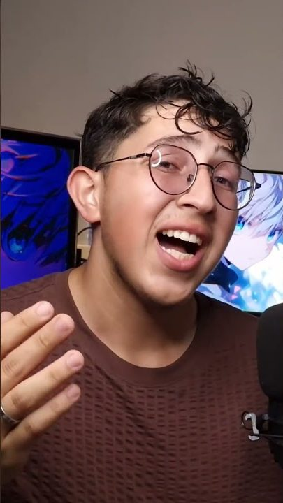
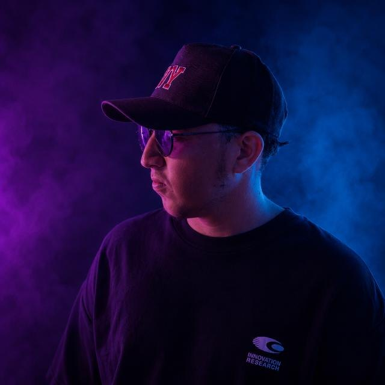

Escolha de estilo · site do Joel
Seis jeitos de vestir o mesmo esboço: abertura, faixa de canais, portfólio por partes (Gameplay · Vlogs · Shorts), como trabalho e contato. Cada quadro mostra só a primeira tela, no tamanho de um computador (1440 × 900), reduzida. As fotos e capas são as dele mesmo.
O que vi nos sites dele (thjoel.carrd.co e joelvlr.carrd.co)
- Dois sites em inglês, separados por assunto: talking head (setup, vlog) e Valorant (gameplay). Mesma estrutura: "Hi, I'm Joel", vídeos longos, curtos e um botão "Hire me" que leva ao X.
- 12 vídeos: 4 de gameplay (Joxlzin, Cortes do Joxlzin, Celly e um trial edit), 3 vlogs de setup (Joxlzin) e 5 shorts (mouse, monitor, Cypher, Sacy).
- Canais com quem trabalhou: Joxlzin, Cortes do Joxlzin, Celly, lorenemaf.
- Foto com fumaça roxa e azul, que vira a paleta de quase todos os estilos.
A · Linha do tempo editor de vídeoindicado
Hi, I'm Joel.
I edit gameplay, vlogs and shorts for YouTubers and streamers.
Hire me →
V1 · joel_main.mp4











O site inteiro é a tela de um programa de edição: os vídeos ficam nas trilhas da linha do tempo, e o cursor laranja anda conforme a pessoa rola a página. Para editor, é o que mais "fala a língua" de quem contrata.
Fontes: Space Grotesk e JetBrains Mono.
B · Neon roxo e azul da foto deleindicado
JOEL
Video editor for YouTubers and streamers.
Hire meA foto larga do Gemini ocupa a tela inteira, com o nome enorme em cima da fumaça. As capas dos vídeos têm um contorno fino roxo ou azul. É o mais impactante e o mais "gamer".
Fontes: Unbounded e Inter.
C · Interface de jogo tático sem marca de jogo
Joel
Gameplay edits, vlogs and shorts for creators.

ONLINECara de tela de seleção de jogo: grade no fundo, cantos cortados, números grandes e abas como menu de jogo. O verde-limão foi escolhido justamente para não parecer o Valorant.
Fontes: Chakra Petch.
D · Gravando visor de câmera
Hi,
I'm Joel
Video editor for YouTubers and streamers. Gameplay, vlogs and shorts.
● Hire meA página inteira dentro do visor de uma câmera gravando: cantos, ponto vermelho piscando e timecode. Preto e branco, com o vermelho como único destaque.
Fontes: Archivo Black e IBM Plex Mono.
E · Estúdio limpo claro e profissional
I edit videos that keep people watching.
Gameplay, vlogs and shorts for YouTubers and streamers, in Brazil and abroad.
Hire meSee my workGameplay · CellyFundo claro, muito espaço e um título grande com uma frase de venda. Deixa a foto escura e as capas coloridas se destacarem. É o mais sóbrio, bom para clientes gringos maiores.
Fontes: Instrument Serif e Inter.
F · Por criador a ideia do Behance
Joel
Video editor · creators I've worked with
Um cartão para cada canal com quem ele trabalhou; clicou, abre os vídeos daquele canal. Mostra "quem já confia nele", mas fica fraco enquanto houver poucos clientes (hoje são 4, um com 1 vídeo só).
Fontes: Syne e Manrope.
Página de trabalho, não é o site. As capas são dos vídeos públicos do YouTube que estão nos sites dele; a foto larga foi estendida no Gemini a partir da original. Dá para misturar: por exemplo, a abertura do B com a linha do tempo do A no portfólio.